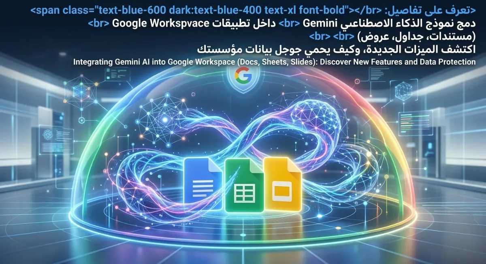
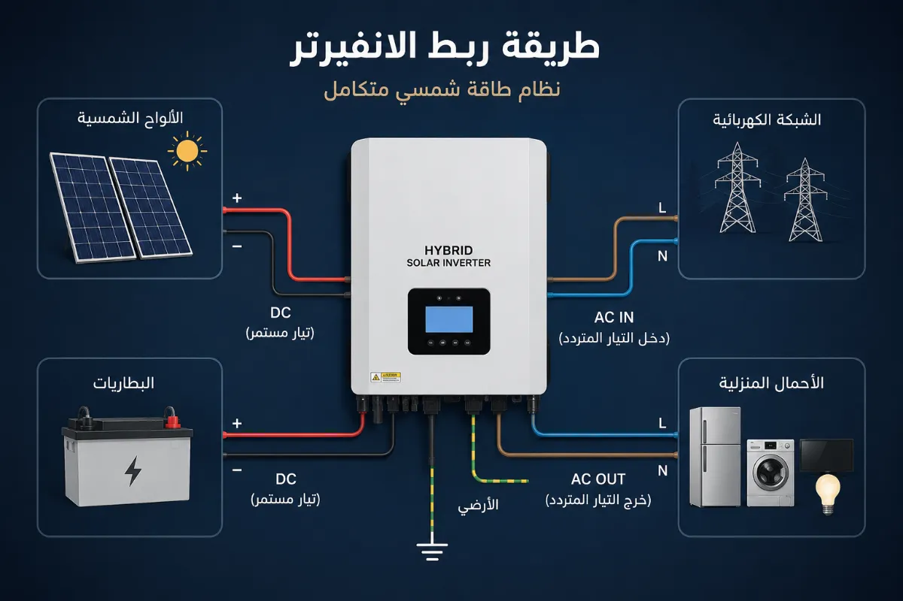

الإعلان رسمياً عن DeepSeek-V4: ثورة الذكاء الاصطناعي التي تكسر كل القواعد!
أعلنت شركة DeepSeek رسمياً عن إطلاق الإصدار التجريبي المفتوح المصدر لنموذجها الأحدث DeepSeek-V4. هذا الإصدار لا يمثل مجرد ترقية عادية، بل قفزة تقنية هائلة تدشن حقبة "السياق المليوني بتكلفة اقتصادية"، مع أداء يضاهي بل ويتفوق على أعتى النماذج المغلقة في العالم!
محتويات التحديث الرسمي:
1. تفاصيل المعاملات والإصدارات المتاحة
تم تدريب كلا الإصدارين مسبقاً على كمية بيانات مهولة بلغت 32 تريليون رمز (Token) لضمان أقصى درجات الفهم والمعرفة. ويتوفر النموذج في إصدارين رئيسيين:
DeepSeek-V4-Pro
- إجمالي المعاملات: 1.6 تريليون معامل
- المعاملات النشطة: 49 مليار معامل
- يقدم أداءً يضاهي أفضل النماذج المغلقة في العالم.
DeepSeek-V4-Flash
- إجمالي المعاملات: 284 مليار معامل
- المعاملات النشطة: 13 مليار معامل
- خيارك الأمثل للسرعة الفائقة والتكلفة الاقتصادية مع أداء منطقي مقارب للـ Pro.
2. الابتكار الهيكلي: نافذة المليون رمز!
السر الحقيقي وراء كفاءة V4 ليس فقط في حجم البيانات، بل في بنية الانتباه (Attention) الجديدة كلياً التي تختلف جذرياً عن الأساليب التقليدية:
-
تقنية DSA الجديدة: تم استخدام آلية "ضغط الرموز" (Token-wise compression) مدمجة مع تقنية الانتباه المتناثر لـ DeepSeek (DSA). هذه التقنية أسهمت في تقليل متطلبات الحوسبة واستهلاك الذاكرة (Memory/Compute Costs) بشكل غير مسبوق!
-
معيار 1M القياسي: بفضل هذه الهندسة، أصبح التعامل مع سياق يبلغ مليون رمز (1M Context) هو المعيار الافتراضي في خدمات DeepSeek الرسمية، دون أي تضحية بالسرعة.
3. نتائج الأداء: منافسة شرسة للكبار
وفقاً للبيانات الرسمية، حقق النموذج تطوراً ملحوظاً في مستوى المعرفة العامة (World Knowledge)، حيث يتصدر حالياً كافة النماذج مفتوحة المصدر، ولا يتأخر سوى عن الإصدارات المغلقة الكبرى مثل Gemini 3.1 Pro. كما حقق نتائج تقييم في المنطق الرياضي والبرمجي (Reasoning) تضاهي نماذج رائدة مثل Claude Opus 4.6.
4. تحسينات مخصصة لثورة "الوكلاء الذاتيين" (Agents)
لم يركز V4 على المحادثة فقط، بل تم هندسته ليكون العقل المدبر لـ Agentic AI:
- يندمج النموذج الجديد بسلاسة تامة مع وكلاء الذكاء الاصطناعي الرائدة مثل Claude Code، و OpenClaw، و OpenCode.
- يُشغل فعلياً نظام البرمجة الوكيلية الداخلية (In-house agentic coding) الخاص بمهندسي شركة DeepSeek أنفسهم، مما يثبت كفاءته في بيئات الإنتاج الحقيقية.
5. أنماط الاستخدام وكيفية التجربة الآن!
التطبيق والويب متاحان الآن للمستخدمين بنمطين أساسيين لتناسب جميع الاحتياجات:
* واجهة برمجة التطبيقات (API) تم تحديثها وهي متاحة رسمياً للمطورين اليوم!
جرب DeepSeek V4 الآنقد يعجبك أيضاً
أدوات الذكاء الاصطناعي: للمبرمجين في 2026: بيئات تطوير ووكلاء ذكية
AI دليل أفضل أدوات الذكاء الاصطناعي لإنشاء وتحرير الفيديو باحترافية

تعرف على تفاصيل دمج نموذج Gemini داخل تطبيقات Google Workspace (مستندات، جداول، عروض): منصتك المتكاملة للرياضة والترفيه

لوحة مفاتيح AI تغير طريقة الكتابة على هاتفك بالكامل

أفضل أدوات الذكاء الاصطناعي لعام 2025 و2026

أفضل منصات ذكاء اصطناعي مجانية بالكامل في 2026 (بدون اشتراك مدفوع)
.webp)
مستقبل الذكاء الاصطناعي 2026: الاتجاهات، التحديات، وتأثيره على البشرية

ثورة طبية 2026: أدوية مصممة بالكامل بواسطة AI تدخل التجارب السريرية

ثورة النماذج متعددة الوسائط: كيف غيرت OpenAI قواعد اللعبة؟

الذكاء الاصطناعي في جيبك: نظرة على تجربة Google Gemini Nano

ديمقراطية الذكاء الاصطناعي: دور Hugging Face والمصدر المفتوح
